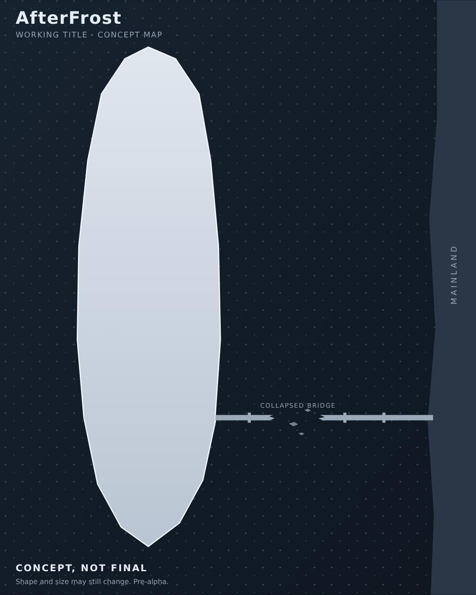
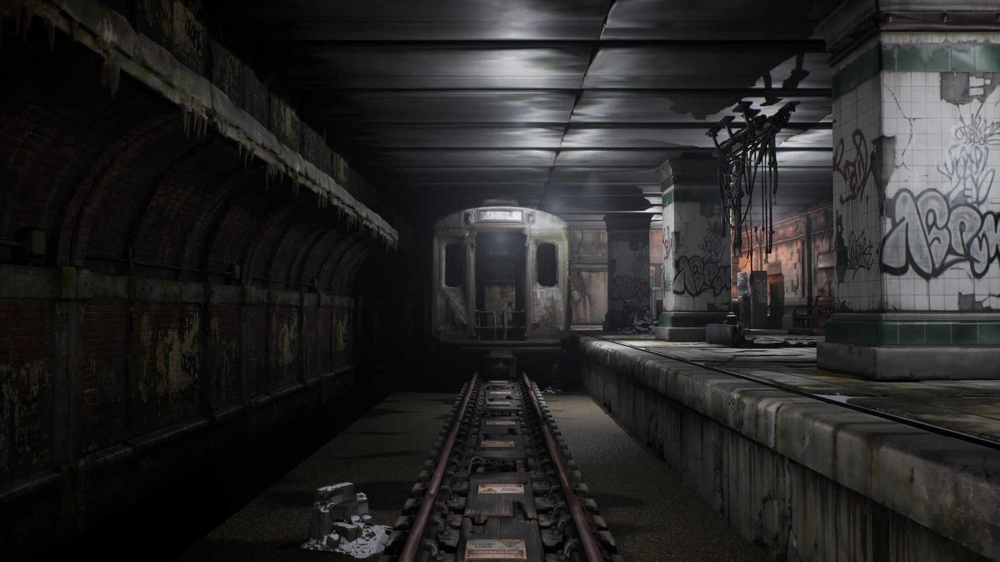

Imagine a bridge that stops in mid-air. Below it, black water with drifting ice. The mainland is close enough to see. Nobody makes it across.
That image is where AfterFrost begins: a long, narrow city island in deep winter, evacuated and sealed off. There's no invisible wall at the edge – the water is simply too cold to swim far.
Why long and narrow? On a round map, players spread out. On a long island, everyone heading somewhere ends up on the same few routes. Encounters stop being random and start being likely.

Concept map – not final.
One life, one journey. You wash ashore in the quiet north with almost nothing. The better gear lies far to the south. Getting there is the story of a life – and most lives won't make it.
Three routes, three risks. The wide avenue is fast but exposed. Back alleys are slow but covered. The metro keeps you out of the wind, but it's dark, and the infected gather there.

Pre-alpha · In-engine
The metro: out of the wind, but dark. Test scene – pre-alpha, in-engine; the 3D kit counts as AI-generated content.
Warmth is a place. Cold is the core of AfterFrost, so lasting heat should be rare – and whoever holds it can be seen from far away.
What exists today. Honestly: the island as a whole is a plan. What's built is a first district in the north and a metro test scene. Cold, injuries, fire and the infected are systems in testing. I'll build the island step by step and show progress here – without dates I can't keep yet.
Your turn: You wash ashore with nothing. Where do you head first – the apartment blocks, the shoreline, or down into the metro?
AfterFrost is a working title. All images: pre-alpha, in-engine. Map: concept. I use AI assistants for code, tools and documentation; some purchased 3D assets count as AI-generated content.
Devlog #1
Kein Weg hinaus – So entsteht die Insel
· Devlog #1 · Design-Einblick · Konzept, nicht final
Stell dir eine Brücke vor, die mitten über dem Wasser abbricht. Darunter schwarzes Wasser mit treibendem Eis. Das Festland ist in Sichtweite. Hinüber kommt niemand.
Mit diesem Bild beginnt AfterFrost: eine lange, schmale Großstadtinsel im tiefsten Winter, evakuiert und abgeriegelt. Eine unsichtbare Wand am Rand gibt es nicht – das Wasser ist einfach zu kalt, um weit zu schwimmen.
Warum lang und schmal? Auf einer runden Karte verteilen sich die Spieler. Auf einer langen Insel landet jeder, der irgendwohin will, auf denselben wenigen Wegen. Begegnungen sind dann kein Zufall mehr, sondern wahrscheinlich.
Konzeptkarte – nicht final.
Ein Leben, eine Reise. Du wirst im ruhigen Norden angespült, mit fast nichts. Die bessere Ausrüstung liegt weit im Süden. Der Weg dorthin ist die Geschichte eines Lebens – und die meisten kommen nicht an.
Drei Wege, drei Risiken. Die breite Hauptstraße ist schnell, aber offen. Hinterhöfe sind langsam, aber gedeckt. Die Metro schützt vor dem Wind, ist aber dunkel, und dort sammeln sich die Infizierten.
Pre-Alpha · In-Engine
Die U-Bahn: windgeschützt, aber dunkel. Testaufbau – Pre-Alpha, In-Engine; das 3D-Kit gilt als KI-Inhalt.
Wärme ist ein Ort. Kälte ist der Kern von AfterFrost, also soll dauerhafte Wärme selten sein – und wer sie hält, ist von Weitem zu sehen.
Was heute steht. Ehrlich gesagt: Die Insel als Ganzes ist ein Plan. Gebaut sind ein erstes Viertel im Norden und ein U-Bahn-Testaufbau. Kälte, Verletzungen, Feuer und Infizierte sind Systeme im Test. Ich baue die Insel Schritt für Schritt und zeige den Fortschritt hier – ohne Termine, die ich noch nicht halten kann.
Jetzt du: Du wirst angespült, mit nichts. Wohin gehst du zuerst – in die Wohnblöcke, ans Ufer oder hinunter in die Metro?
AfterFrost ist ein Arbeitstitel. Alle Bilder: Pre-Alpha, In-Engine. Karte: Konzept. Ich nutze KI-Assistenten für Code, Werkzeuge und Dokumentation; einige gekaufte 3D-Modelle gelten als KI-generiert.